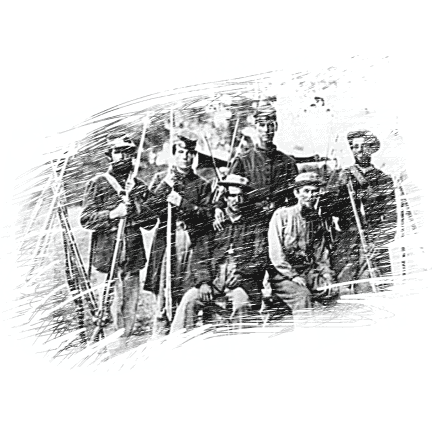
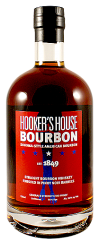

Hooker's House Bourbon
Is an exciting new Bourbon, born in Kentucky and matured in Sonoma Valley’s wine country. After spending time in a Bourbon Belt Rick House, the Bourbon was double barreled and additionally aged in neutral Pinot Noir barrels from Schug Winery here in the Sonoma, California. Prohibition Spirits has combined the best of both worlds for a truly remarkable first of its kind American Spirit from Wine Country. The process of finishing the Bourbon in Pinot Noir barrels produces a never before tasted premium class of Bourbon filled with dark fruit flavor and smell. (HHB 100 proof small batch high Rye Bourbon finished in Pinot Noir barrels)
-

Rye
Small, batch whiskey aged in Zinfandel barrels
-

General's Reserve
This rare spirit was born from barrels of 21 year old Bourbon discovered in the back of a brick house. Only 371 bottles were made. Find it if you can
-

Prohibition 7/21
A blend of straight Bourbon Whiskey, aged between 7 and 21 years in 7 unique barrels over a period of 16 months. A truly unique spirit.
-
Private's Select
100% Corn Whiskey distilled in small batches in a copper still and bottles in mason jars.